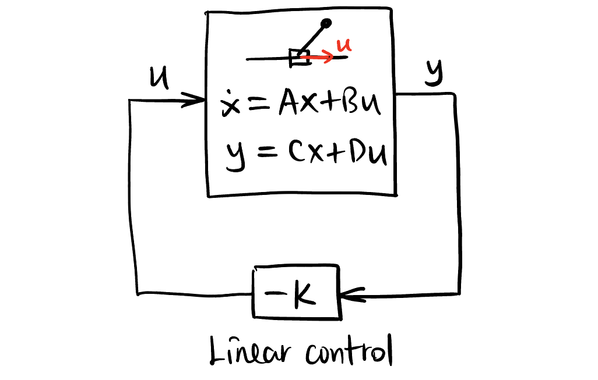
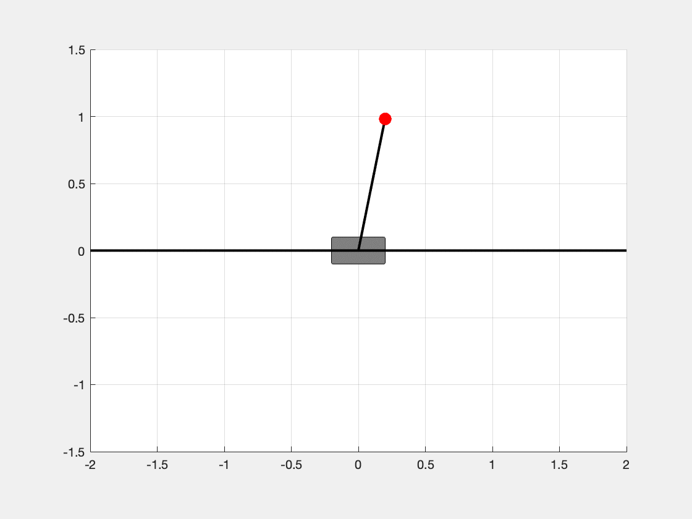
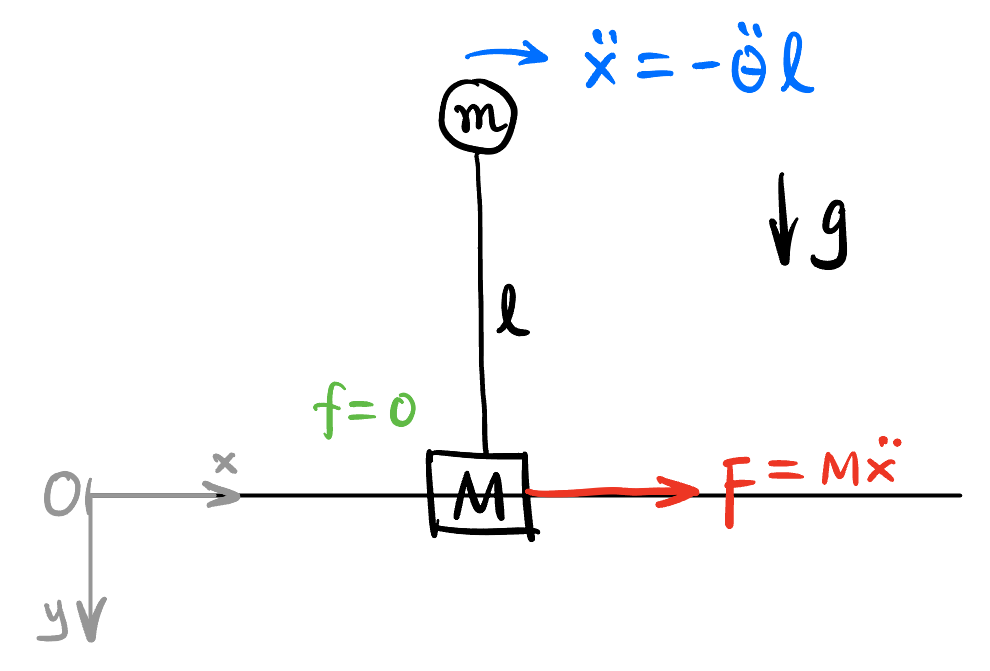
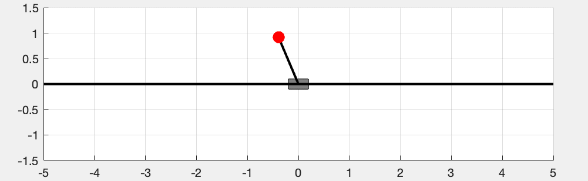
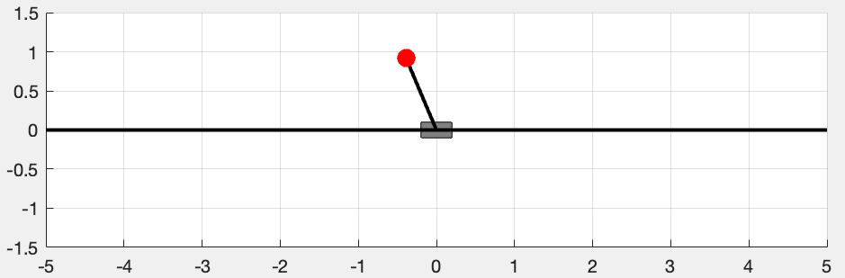
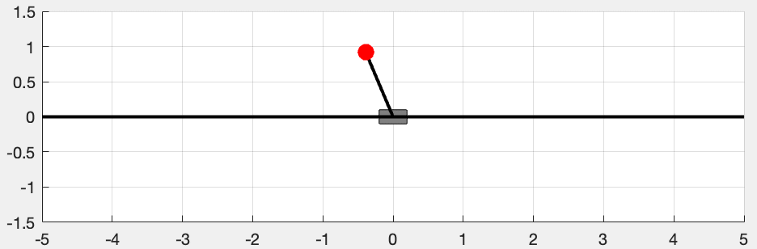

Control Case Study: LQR for Inverted Pendulum!
1 Intro

The objective of this article is to provide a self-contained guide to building a linear feedback control system for the classical inverted pendulum problem in MATLAB, i.e., to design a controller by applying a force to the cart \(M\) to balance the pendulum at the upright position (shown in Figure 1). We will use the following standard equations of a control system: \[ \begin{aligned} \dot{\mathbf{x}} &= A \mathbf{x} + B \mathbf{u} \\ \mathbf{y} &= C \mathbf{x} + D \mathbf{u} \\ \mathbf{u} &= -K \mathbf{y}. \end{aligned} \]
A brief description of the symbols and their physical interpretation is given in the following table. If you have difficulty understanding their meanings, don’t worry, feel free to scan the next section.
| Symbol | Description | This Article |
|---|---|---|
| \(\mathbf{x} \in TM\) | System state vector in the tangent bundle of dimension \(n\). | \(\mathbf{x} = [x, \dot{x}, \theta, \dot{\theta}]^t \in T(\mathbb{R}^1 \times \mathbb{S}^2)\) |
| \(\mathbf{u} \in TM_c\) | The values control knobs (“actuators”) in a space of dimension \(q\) (\(q < n\)). | Force on the cart \(\mathbf{u} = \mathbf{F} \in \mathbb{R}\). |
| \(\mathbf{y} \in TM_o\) | The observable output vector of the system (the values that we can measure) in a space of dimension \(p\) (\(p < n\)). | All dimension of \(\mathbf{x}\) is observable \(\mathbf{y} = \mathbf{x}\). |
| \(A^{n \times n}\) | The linear infinitesimal generator of the system. | Modelling and linearization needed, see Equation 5. |
| \(B^{n \times q}\) | How the control knobs affect the state vector. | Force analyzing needed, see Equation 6. |
| \(C^{p \times n}\) | Convert the state vector to what we can actually measure. | \(C = I\). |
| \(D^{p \times q}\) | Sometimes the control knobs affect the system observable output directly. | Applying the force has no direct effect on the observable \(D = 0\). |
| \(K^{q \times p}\) | The linear feedback matrix. The observable \(\mathbf{y}\) is mapped linearly to the control knobs. | We use LQR to optimize this matrix. |
2 Physics Model
In this section, we will derive the equations of motion for the cart-pendulum system using Lagrangian Mechanics. I hope Figure 1 will be enough to explain the notations used in this article.
The dynamics of the system can be computed using Lagrangian Mechanics:
\[ \boxed{ \frac{\mathrm{d}}{\mathrm{d}t}\frac{\partial L}{\partial q_i} - \frac{\partial L}{\partial q_i} = Q_i^{\text{non-conservative}}, } \tag{1}\] where \(q_i\) is either \(x\) or \(\theta\) in our case. The lagrangian \(L\) is system kinetic energy minus potential energy: \[ L = T - V. \]
2.1 Kinetic Energy
The total kinetic energy of the system is the sum of the kinetic energy of the cart and the kinetic energy of the pendulum: \[ T = T_M + T_m. \]
First we compute the position of \(m\): \[ \mathbf{r}_m = \begin{bmatrix} x + \ell \sin \theta \\ -\ell \cos \theta \end{bmatrix}. \]
Therefore, \[ \begin{aligned} T_m &= \frac{1}{2} m \dot{\mathbf{r}}_m^T \dot{\mathbf{r}}_m \\ &= \frac{1}{2} m \left[(\dot{x} + \ell \dot{\theta} \cos \theta)^2 + (\ell \dot{\theta} \sin \theta)^2\right] \\ &= \frac{1}{2} m \left[ \dot{x}^2 + \ell^2 \dot{\theta}^2 + 2 \ell \dot{x} \dot{\theta} \cos \theta \right]. \end{aligned} \]
The kinetic energy of \(M\) is easy: \[ T_M = \frac{1}{2} M \dot{x}^2. \]
The total kinetic energy is: \[ T = \frac{1}{2} (M + m) \dot{x}^2 + \frac{1}{2} m \ell^2 \dot{\theta}^2 + m \ell \dot{x} \dot{\theta} \cos \theta. \]
2.2 Potential Energy
Only the pendulum has potential energy: \[ V = - m g \ell \cos \theta. \]
2.3 Euler-Lagrange Equation
The lagrangian of the system is: \[ \begin{aligned} L &= T - V \\ &= \frac{1}{2} (M + m) \dot{x}^2 + \frac{1}{2} m \ell^2 \dot{\theta}^2 + m \ell \dot{x} \dot{\theta} \cos \theta + m g \ell \cos \theta. \end{aligned} \]
2.3.1 Euler-Lagrange in \(x\)
For \(q_1 = x\): \[ \begin{aligned} \frac{\partial L}{\partial \dot{x}} &= (M + m) \dot{x} + m \ell \dot{\theta} \cos \theta \\ \frac{\mathrm{d}}{\mathrm{d}t} \left( \frac{\partial L}{\partial \dot{x}} \right) &= (M + m) \ddot{x} + m \ell (-\sin \theta \dot{\theta}^2 + \cos \theta \ddot{\theta}) \\ \frac{\partial L}{\partial x} &= 0 \\ Q_x^{\text{non-conservative}} &= F - b \dot{x}. \end{aligned} \]
By Equation 1, we have: \[ (M + m) \ddot{x} + m \ell (-\sin \theta \dot{\theta}^2 + \cos \theta \ddot{\theta}) = F - b \dot{x}. \tag{2}\]
2.3.2 Euler-Lagrange in \(\theta\)
For \(q_2 = \theta\): \[ \begin{aligned} \frac{\partial L}{\partial \dot{\theta}} &= m \ell^2 \dot{\theta} + m \ell \dot{x} \cos \theta \\ \frac{\mathrm{d}}{\mathrm{d}t} \left( \frac{\partial L}{\partial \dot{\theta}} \right) &= m \ell^2 \ddot{\theta} + m \ell (\ddot{x} \cos \theta - \dot{x} \sin \theta \dot{\theta}) \\ \frac{\partial L}{\partial \theta} &= - m g \ell \sin \theta - m \ell \dot{x} \sin \theta \dot{\theta} \\ Q_{\theta}^{\text{non-conservative}} &= 0. \end{aligned} \]
By Equation 1, we have: \[ m \ell \ddot{x} \cos \theta + m \ell^2 \ddot{\theta} + m g \ell \sin \theta = 0. \tag{3}\]
2.3.3 Matrix Form
Write Equation 2 and Equation 3 in matrix form: \[ \begin{bmatrix} M + m & m \ell \cos \theta \\ m \ell \cos \theta & m \ell^2 \end{bmatrix} \begin{bmatrix} \ddot{x} \\ \ddot{\theta} \end{bmatrix} = \begin{bmatrix} F - b \dot{x} + m \ell \sin \theta \dot{\theta}^2 \\ - m g \ell \sin \theta \end{bmatrix}. \tag{4}\]
2.4 Matlab Code
The following function computes the state-space model of the inverted pendulum:
invpend.m
% x -> state vector (x, xdot, theta, thetadot)
% m -> mass of pendulum
% M -> mass of cart
% L -> length of pendulum
% g -> gravity
% b -> friction = -b*xdot
% F -> force applied to cart
% dx -> derivative of state vector
function dx = invpend(x, m, M, L, g, b, F)
% Unpack state variables
x1 = x(1); % cart position
x2 = x(2); % cart velocity (xdot)
x3 = x(3); % pendulum angle (theta)
x4 = x(4); % angular velocity (thetadot)
% Precompute useful terms
sin_theta = sin(x3);
cos_theta = cos(x3);
theta_dot = x4;
% Mass matrix
D = [M + m, m * L * cos_theta;
m * L * cos_theta, m * L^2];
% Right-hand side (forces/accelerations)
RHS = [F - b * x2 + m * L * sin_theta * theta_dot^2;
-m * g * L * sin_theta];
% Solve for accelerations
accel = D \ RHS; % Equivalent to inv(D) * RHS, but more stable
% Return time derivative of state vector
dx = zeros(4, 1);
dx(1) = x2; % xdot
dx(2) = accel(1); % xddot
dx(3) = x4; % thetadot
dx(4) = accel(2); % thetaddot
endThe following function simulates the motion of the system without damping and external force:
simulation_invpend.m
clear all; close all; clc;
% Simulation parameters
m = 2; % Mass of pendulum
M = 4; % Mass of cart
L = 1; % Length of pendulum
g = -9.81; % Gravity
b = 30; % damping coefficient
time = 0:.1:10; % Time samples
% Initial conditions
x0 = [0; 0; .2; 0]; % x, xdot, theta, thetadot
% Solve ODE
[t, x] = ode45(@(t, x) invpend(x, m, M, L, g, b, 0), time, x0);
% Animation
for k = 1:length(t)
invpend_plot(x(k, :), L, true, 'simulation_invpend.gif');
end
simulation_invpend.m3 Linearized Phase Space Model
3.1 Linearization of the original dynamics
In this section, we build the linear version of the original system (without control) in the phase space.
First of all, the state of the system can be described in a vector: \[ \mathbf{x} = \begin{bmatrix} x \\ \dot{x} \\ \theta \\ \dot{\theta} \end{bmatrix} \in T (\mathbb{R}^1 \times \mathbb{S}^1) \]
Now we want to use a linear model \(\dot{\mathbf{x}} = \mathbf{Ax}\) to analyze the system at \(\theta = 0\), i.e., we want to find matrix \(A \in \mathbb{C}^{4 \times 4}\) s.t., \[ \frac{\mathrm{d}}{\mathrm{d}t} \begin{bmatrix} x \\ \dot{x} \\ \theta \\ \dot{\theta} \end{bmatrix} = \overbrace{ \begin{bmatrix} \dot{x} \\ \ddot{x} \\ \dot{\theta} \\ \ddot{\theta} \end{bmatrix} }^{\dot{\mathbf{x}}} = \overbrace{ \begin{bmatrix} 0 & 1 & 0 & 0 \\ ? & ? & ? & ? \\ 0 & 0 & 0 & 1 \\ ? & ? & ? & ? \end{bmatrix} }^{A} \overbrace{ \begin{bmatrix} x \\ \dot{x} \\ \theta \\ \dot{\theta} \end{bmatrix} }^{\mathbf{x}} \]
Note the the first and third row are trivial identities, we only need to derive the second and fourth row of \(A\). We already solved Equation 4 in invpend.m. But now we have to solve it explicitly to derive the partial derivatives for the jacobian: \[
\begin{bmatrix}
\ddot{x} \\ \ddot{\theta}
\end{bmatrix}
=
\phi (x, \dot{x}, \theta, \dot{\theta})
=
\begin{bmatrix}
\frac{F - b \dot{x} + m \ell \sin \theta \dot{\theta}^2 - mg \cos \theta \sin \theta}{M + m \sin^2 \theta} \\
\frac{- \cos \theta \left(F - b \dot{x} + m \ell \sin \theta \dot{\theta}^2\right) + (M+m) g \ell \sin \theta}{M \ell + m \ell \sin^2 \theta}
\end{bmatrix}.
\]
Now obviously the function \(\phi\) is non-linear. Its jacobian1 at phase point \(\mathbf{x}_{\text{up}} = [x, 0, 0, 0]^t\) is: \[ \begin{aligned} [J] &= \begin{bmatrix} \frac{\partial \phi_1}{\partial x} & \frac{\partial \phi_1}{\partial \dot{x}} & \frac{\partial \phi_1}{\partial \theta} & \frac{\partial \phi_1}{\partial \dot{\theta}} \\ \frac{\partial \phi_2}{\partial x} & \frac{\partial \phi_2}{\partial \dot{x}} & \frac{\partial \phi_2}{\partial \theta} & \frac{\partial \phi_2}{\partial \dot{\theta}} \end{bmatrix}_{\mathbf{x} = \mathbf{x}_{\text{up}}} \\ &= \begin{bmatrix} 0 & -\frac{b}{M} & -\frac{mg}{M} & 0 \\ 0 & -\frac{b}{M \ell} & -\frac{(m + M)g}{M \ell} & 0 \end{bmatrix}. \end{aligned} \]
1 Just to refresh, the Jacobian \(J\) of a (non-linear) function \(\phi: \mathbb{R}^n \to \mathbb{R}^m\) at point \(p \in \mathbb{R}^n\) can be viewed as the local transformation from the neighborhood of \(p\) to the neighborhood of \(\phi(p)\). \(\mathbb{R}^n\) and \(\mathbb{R}^m\) are not viewed as vector spaces but manifolds. In our case it’s a little weird to compute the jacobian of \(A\) since \(A\) defines a vector field, not mapping between manifolds. Or it is? \(A\) is indeed a mapping between manifolds! Because vector field themselves are a section of the tangent bundle. By the way, this jacobian actually takes me a lot of effort to compute.
Therefore, \[ A = \begin{bmatrix} 0 & 1 & 0 & 0 \\ 0 & -\frac{b}{M} & -\frac{mg}{M} & 0 \\ 0 & 0 & 0 & 1 \\ 0 & -\frac{b}{M \ell} & -\frac{(m + M)g}{M \ell} & 0 \end{bmatrix}. \tag{5}\]
3.2 Deriving matrix \(B\) for control
The only control knob is \(\mathbf{u} = \mathbf{F}\), the force on the cart.

By Newton’s second law, it’s obvious that \[ B \mathbf{u} = \begin{bmatrix} 0 \\ \frac{1}{M} \\ 0 \\ -\frac{1}{M \ell} \end{bmatrix} F. \tag{6}\]
Each entry of \(B\) in Equation 6 is explained in the following table:
| Entry | Explanation |
|---|---|
B(1,1) = 0 |
The velocity \(\dot{x}\) of the cart \(M\) will not suddenly change due to the force \(F\). |
B(2,1) = \(\frac{1}{M}\) |
The acceleration \(\ddot{x}\) flash to \(\frac{F}{M}\) due to \(F\). |
B(3,1) = 0 |
The angular velocity \(\dot{\theta}\) of the pendulum \(m\) will not suddenly change due to the force \(F\). |
B(4,1) = \(-\frac{1}{M \ell}\) |
The angular acceleration \(\ddot{\theta}\) of the pendulum \(m\) flash to \(-\frac{F}{M \ell}\) due to \(F\). The pendulum is moving backward relative to the cart, hence the negative sign. |
4 Controllability of the system
4.1 Original system stability
From intuition, the system where \(\theta = 0\) is unstable. How to know that from Equation 5? We know that the system \(\dot{\mathbf{x}} = A \mathbf{x}\) is stable iff all the eigenvalues of \(A\) are rigorously negative. The instability of the system can be verified by the following Matlab code:
original_system_stability.m
clear all; close all; clc;
% Simulation parameters
m = 3; % Mass of pendulum
M = 5; % Mass of cart
L = 1; % Length of pendulum
g = -9.81; % Gravity
b = 5; % damping coefficient
% Define matrix, xdot = Ax + Bu
A = [0, 1, 0, 0;
0, -b/M, -m*g/M, 0;
0, 0, 0, 1;
0, -b/(M*L), -(M+m)*g/(M*L), 0];
B = [0; 1/M; 0; -1/(M*L)];
eig(A)4.2 Controllability
One great thing about feedback is that we can change the fundamental dynamics of the system, changing its eigenvalues2 to make it stable (as shown in Figure 2).
2 Also called poles for historical reasons.
The system with linear feedback is: \[ \begin{aligned} \dot{\mathbf{x}} &= A \mathbf{x} + B \mathbf{u} \\ \mathbf{u} &= -K \mathbf{x}, \end{aligned} \] or \[ \dot{\mathbf{x}} = (A - B K) \mathbf{x}, \] whose dynamics could be very different from the original system \(\dot{\mathbf{x}} = A \mathbf{x}\).
We want to take full control of the system, i.e., does there exist some \(\mathbf{F} = \mathbf{u}(t)\) to drive the system state point to anywhere in the phase space? In other words, is the system controllable?
3 In fact, there is a built-in Matlab function K = place(A, B, desired_eigs_vec) to help you place the poles of the system to any desired locations.
By Theorem 1, the system is controllable iff ctrb(A, B) has rank \(4\). In fact, the following Matlab code can verify this.
sys_controllability.m
clear all; close all; clc;
% Simulation parameters
m = 3; % Mass of pendulum
M = 5; % Mass of cart
L = 1; % Length of pendulum
g = -9.81; % Gravity
b = 5; % damping coefficient
% Define matrix, xdot = Ax + Bu
A = [0, 1, 0, 0;
0, -b/M, -m*g/M, 0;
0, 0, 0, 1;
0, -b/(M*L), -(M+m)*g/(M*L), 0];
B = [0; 1/M; 0; -1/(M*L)];
rank(ctrb(A, B))5 Finding the feedback matrix \(K\)
5.1 Random pole placement
For controllable systems, Theorem 1 also guarantees that we can place the poles of the system to any desired locations, say desired_eigs_vec = [-3; -4; -5; -6], just randomly some numbers in the left half of the complex plane, to ensure the stability of the system. We use place() in Matlab to find such \(K\) and use that \(K\) to simulate the control effect of the system.
simulation_linear_control.m
clear all; close all; clc;
%% Simulation parameters
m = 2; % Mass of pendulum
M = 10; % Mass of cart
L = 1; % Length of pendulum
g = -9.81; % Gravity
b = 2; % damping coefficient
time = 0:.1:6; % Time samples
%% Initial conditions
x0 = [0; 0; -.4; 0]; % x, xdot, theta, thetadot
%% pole placement
% Define matrix, xdot = Ax + Bu
A = [0, 1, 0, 0;
0, -b/M, -m*g/M, 0;
0, 0, 0, 1;
0, -b/(M*L), -(M+m)*g/(M*L), 0];
B = [0; 1/M; 0; -1/(M*L)];
desired_eigs_vec = [-3; -4; -5; -6];
K = place(A, B, desired_eigs_vec);
% Just to verify that the poles are where we want them
eig(A - B*K)
%% Solve ODE
desired_state_vec = [1; 0; 0; 0];
[t, x] = ode45(@(t, x) invpend(x, m, M, L, g, b, -K * (x - desired_state_vec)), time, x0);
%% Animation
for k = 1:length(t)
invpend_plot(x(k, :), L, true, 'simulation_linear_control.gif');
endsimulation_linear_control.m
We can see in Figure 3, the inverted pendulum is able to be stabilized at the status \(\mathbf{x} = [1, 0, 0, 0]^t\).
By changing the desired eigenvalues, we can adjust the convergent speed of the system.
desired_eigs_vec_1 = [-1; -2; -3; -4]desired_eigs_vec_2 = [-2; -3; -4; -5]desired_eigs_vec_3 = [-3; -4; -5; -6]desired_eigs_vec_4 = [-4; -5; -6; -7]We can see that more negative eigenvalues lead to faster convergence, at the risk of breaking the linearity limit and making the system less robust. So we need to make a trade-off between the convergence speed and the robustness (convergence speed is usually limited by the power of the control). Also, we may want to change the convergence style: whether to make the cart move as quickly as possible, or save as much energy as much as possible as long as the pendulum is inverted? Thankfully there is a way to find the required and “optimal” (in a sense) eigenvalues – the Linear Quadratic Regulator (LQR).
5.2 Linear Quadratic Regulator (LQR)
The idea is to define a metric (“loss function” in optimization jargon) to measure the badness of the eigenvalues (either too less robust or cost a lot to control), and then minimize that metric. Someone came up with this weird Equation 7:
\[ \tilde{J} := \int_0^\infty (\mathbf{x}^t Q \mathbf{x} + \mathbf{u}^t R \mathbf{u}) \ \mathrm{d}t, \tag{7}\] where \(Q^{n \times n}\) and \(R^{q \times q}\) are symmetric, positive-definite matrices, which typically are diagonal. In our example, we could choose \[ Q = \begin{bmatrix} 1 & 0 & 0 & 0 \\ 0 & 1 & 0 & 0 \\ 0 & 0 & 5 & 0 \\ 0 & 0 & 0 & 70 \end{bmatrix}, \quad R = 0.5, \] which we put bigger penalties on \(\theta\) and \(\dot{\theta}\) because we want them to converge to their expected value quickly. For the position \(x\) and velocity \(\dot{x}\), we don’t care much, so we put a small penalty on them. Also we put a penalty on the control input \(F\) since our control device is able to provide large enough instantaneous force and we don’t care the expenditure of energy.
Therefore, \(\tilde{J}\) will be: \[ \tilde{J} = \int_0^\infty (x^2 + \dot{x}^2 + 5 \theta^2 + 70 \dot{\theta}^2 + 0.5 F^2) \ \mathrm{d}t. \]
Now we are using Linear feedback to Regulate a system to minimize a Quadratic loss function, hence the name Linear Quadratic Regulator (LQR).
The solution to this LQR problem deserves a separate lecture, the solution is given by the Algebraic Riccati Equation. But in Matlab, there is a one-line command we can use to solve the corresponding \(K\) matrix:
K = lqr(A, B, Q, R)5.3 Simulation by changing Q matrix
We simulate the dynamics result with different \(Q\) matrices and fixed \(R = 0.01\):
5.4 Simulation by changing R values
We simulate the dynamics result with fixed \(Q - \operatorname{diag} (20, 400, 1, 1)\) matrix and different \(R\) values:


